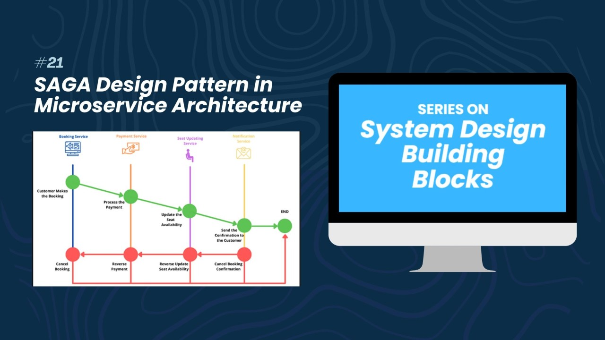

SAGA Design Pattern in Microservice Architecture
Ashmita Pandey · · Distributed Systems · Microservices

As systems scale and architectures move from monoliths to microservices, one of the first challenges engineers encounter is transaction management.
In a monolithic application, handling transactions is straightforward. Multiple operations are wrapped inside a single database transaction. If any step fails, the entire transaction is rolled back.
Microservices break this assumption.
Each service owns its data, communicates over the network, and operates independently. In this world, traditional transactions and global rollbacks are no longer viable. This is where the Saga Design Pattern plays a critical role.
The Problem with Transactions in Microservices
Microservices introduce constraints that make traditional transaction handling impractical:
- Each service has its own database
- Cross-service database locks are not possible
- Network calls introduce latency and failures
- Distributed transactions (2PC) reduce availability and scalability
Yet, business workflows still require data consistency across services.
Saga addresses this gap.
What is the Saga Design Pattern?
A Saga is a design pattern used to manage distributed transactions by breaking a long-running process into a sequence of local transactions.
Each local transaction:
- Executes within a single service
- Publishes an event or triggers the next step
- Has a compensating transaction to undo its changes if a later step fails
Instead of strong consistency, Saga relies on eventual consistency.
The system may be temporarily inconsistent, but it will always converge to a valid state.
A Practical Example: Order Processing
Consider a simple order workflow involving three services:
- Order Service – creates the order
- Payment Service – charges the customer
- Inventory Service – reserves the items
Successful Flow
Order created → Payment processed → Inventory reserved
The order is completed successfully.
Failure Scenario
Order created → Payment processed → Inventory reservation fails
At this point, the system cannot simply “roll back” the payment. Instead, the Saga executes compensating actions:
- Refund the payment
- Cancel the order
The workflow is reversed step by step, restoring consistency without a global transaction.
Saga Implementation Models
There are two common ways to implement Saga in a microservice architecture.
1. Choreography-Based Saga
In choreography, there is no central coordinator.
Services communicate by publishing and subscribing to events. Each service decides what to do when it receives an event.
Example flow:
- Order Service publishes OrderCreated
- Payment Service processes payment and publishes PaymentCompleted
- Inventory Service reserves stock and publishes InventoryReserved
Advantages
- Loosely coupled services
- Simple to implement for small systems
Challenges
- Hard to visualize the complete workflow
- Debugging becomes difficult as the number of services grows
- Event chains can turn into tightly coupled logic over time
2. Orchestration-Based Saga
In orchestration, a Saga Orchestrator explicitly controls the workflow.
The orchestrator sends commands to services and decides what the next step should be based on responses.
Example flow: Orchestrator → Create Order Orchestrator → Process Payment Orchestrator → Reserve Inventory
If any step fails, the orchestrator triggers compensating actions in the correct order.
Advantages
- Clear business flow
- Easier monitoring, retries, and error handling
- Better suited for complex workflows
Challenges
- Additional component to manage
- Slightly tighter coupling between services and the orchestrator
Choosing Between Choreography and Orchestration
There is no universal answer.
- Use choreography for smaller systems with simple workflows
- Prefer orchestration for complex, business-critical processes where visibility and control matter
The decision should be driven by system complexity, team size, and operational needs, not just architectural preference.
When Should You Use Saga?
Saga is a good fit when:
- You are building a microservice-based system
- Transactions span multiple services
- Eventual consistency is acceptable
- Distributed transactions (2PC) are not an option
Saga may not be suitable when:
- You are working with a monolith
- Strong, immediate consistency is required
- Business rules cannot tolerate temporary inconsistency
Final Thoughts
Failures are not edge cases in distributed systems. They are expected.
The goal of good architecture is not to eliminate failure, but to design systems that recover predictably.
The Saga pattern provides a structured way to handle long-running, distributed workflows without sacrificing scalability or resilience.
Understanding and applying Saga correctly is a key step in building reliable microservice architectures.